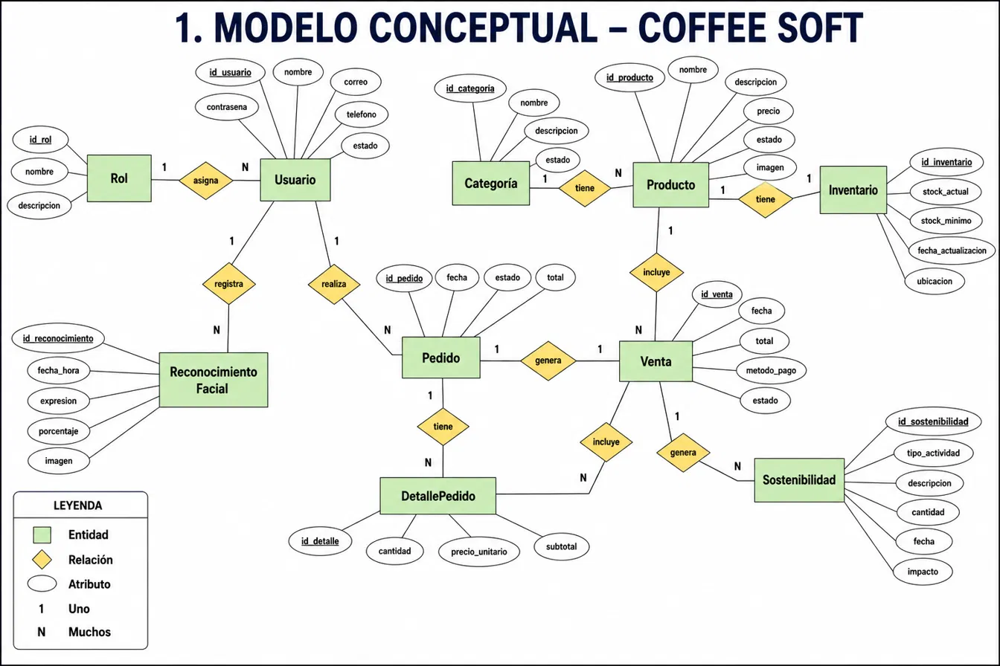
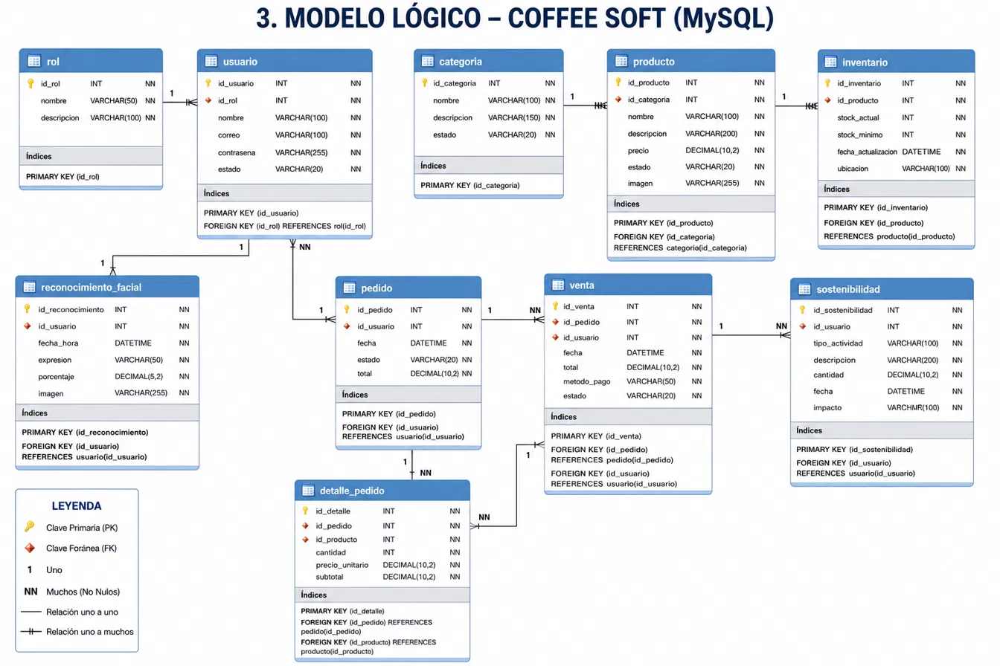
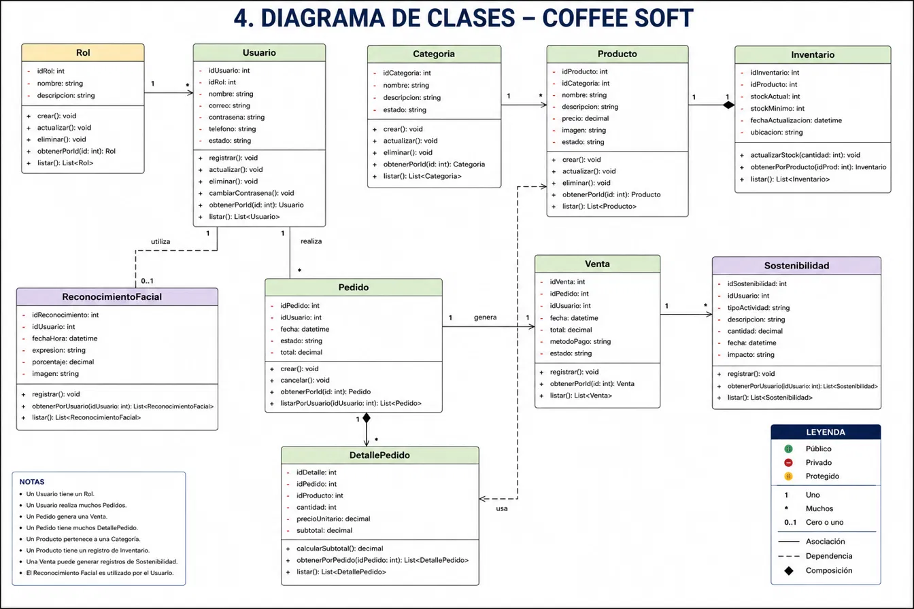
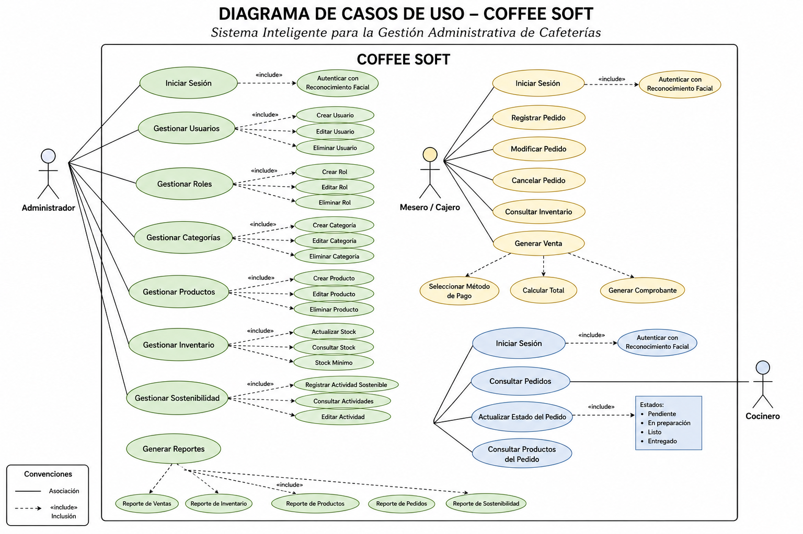
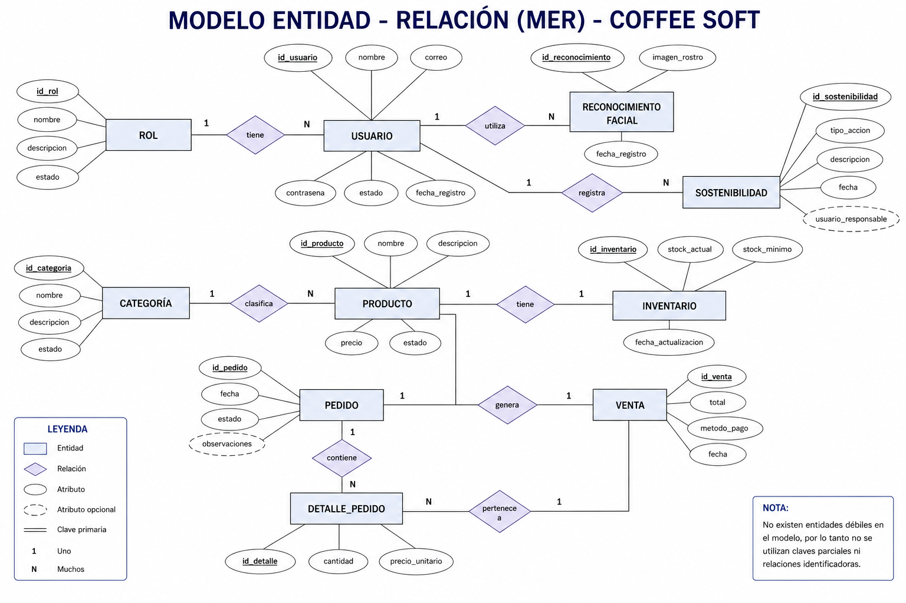
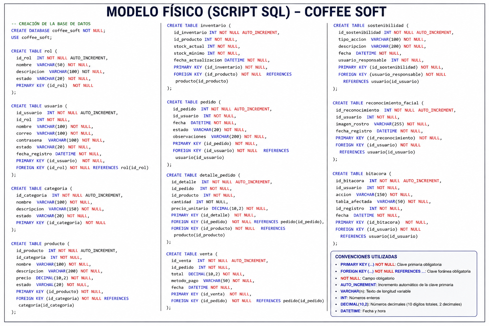
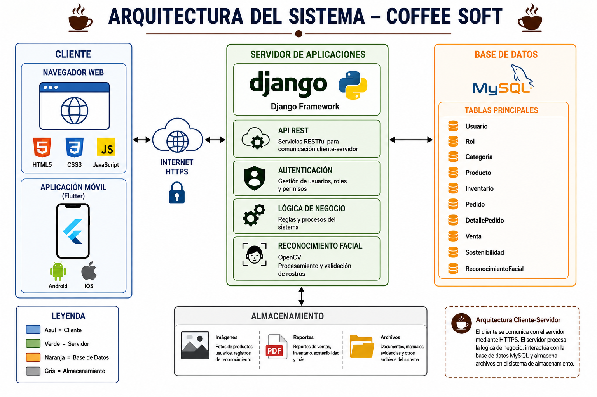

COFFEE SOFT
El aroma del café, la calma de una buena gestión
Introducción
¿Cuántas tazas de café —y cuántas ventas— se pierden por llevar un negocio a puño y letra?
Detrás de cada bebida que se sirve hay un pedido que anotar, un inventario que cuadrar, un cliente que atender bien y un planeta al que cuidar. En la mayoría de cafeterías, todo eso todavía se sostiene con cuadernos, hojas sueltas y memoria. Un solo error de inventario, un pedido mal anotado o un dato que nunca se registró pueden costar tiempo, dinero y clientes.
Hoy los invito a descubrir cómo la tecnología puede transformar un negocio de café en una operación inteligente, ordenada y sostenible — sin perder la calidez que lo hace un buen lugar para tomar café. Esto es COFFEE SOFT.
Situación problema
Un negocio que crece más rápido que su forma de administrarse
- La gestión del inventario, los pedidos y las ventas todavía se realiza de forma manual o en herramientas separadas, lo que impide tener la información del negocio centralizada y actualizada en un solo lugar.
- No existe un control claro de roles y accesos, por lo que el administrador, el cajero o mesero y el cocinero comparten procesos y responsabilidades sin ninguna trazabilidad sobre quién hizo cada acción.
- La toma de decisiones del negocio se apoya más en la intuición que en datos reales, porque no existen reportes confiables y oportunos sobre ventas, inventario y demás indicadores clave de la operación.
- El establecimiento no cuenta con ninguna herramienta para medir ni registrar sus acciones de sostenibilidad y reciclaje, lo que le impide demostrar de forma concreta su compromiso ambiental ante sus clientes.
- Tampoco existe un mecanismo tecnológico que permita analizar la calidad de la atención al cliente durante el servicio, dejando esa evaluación a la percepción subjetiva del personal.
Procesos lentos, pérdida de información, decisiones basadas en intuición y un negocio que no puede escalar ni demostrar su compromiso ambiental de forma medible.
Pregunta problema
¿Cómo optimizar la gestión de usuarios, productos, inventario, pedidos y ventas de una cafetería mediante una plataforma web integral que además promueva prácticas de sostenibilidad y mejore la atención al cliente?
Objetivo general
Lo que buscamos lograr
Desarrollar un sistema web que optimice la gestión interna de un establecimiento dedicado a la preparación y comercialización de café, integrando en una sola plataforma la administración de usuarios, productos, inventario, pedidos y ventas, así como el registro de actividades de sostenibilidad y un módulo de reconocimiento facial que apoye el análisis de la atención brindada durante el servicio.
Objetivos específicos
Cómo lo vamos a lograr
- Analizar los procesos de gestión del establecimiento para identificar los requisitos funcionales y operativos que debe cumplir el sistema.
- Desarrollar un sistema integral para la administración de usuarios, productos, inventario, pedidos y ventas, optimizando la gestión del establecimiento.
- Implementar herramientas de apoyo para la toma de decisiones y la mejora del servicio, mediante reportes, indicadores y reconocimiento facial.
- Garantizar la seguridad, trazabilidad y sostenibilidad del sistema, incorporando mecanismos de auditoría y un módulo para el registro y seguimiento de acciones de reciclaje y sostenibilidad.
Diagramas del sistema · 1 / 6
Modelo conceptual

Representa las entidades del negocio y sus relaciones de alto nivel, sin detalles técnicos de implementación.
Diagramas del sistema · 2 / 6
Modelo lógico (MySQL)

Traduce el modelo conceptual a tablas relacionales listas para implementar en MySQL, definiendo tipos de datos, llaves primarias (PK) y llaves foráneas (FK) que garantizan la integridad referencial.
Diagramas del sistema · 3 / 6
Diagrama de clases

Modela las clases del sistema orientadas a objetos: atributos, métodos y relaciones de asociación, composición y dependencia que guiarán la implementación en Django.
Diagramas del sistema · 4 / 6
Diagrama de casos de uso

Muestra qué puede hacer cada persona dentro de COFFEE SOFT según su rol: el administrador gestiona usuarios, roles, productos, inventario, sostenibilidad y reportes; el mesero o cajero registra pedidos, cobra las ventas y consulta el inventario; y el cocinero revisa los pedidos y actualiza su estado de preparación en cocina.
Diagramas del sistema · 5 / 6
Modelo entidad–relación (MER)

Un usuario tiene un rol y puede realizar muchos pedidos; cada pedido genera una venta y contiene uno o varios productos. Cada producto pertenece a una categoría y tiene su propio inventario. El usuario registra actividades de sostenibilidad y utiliza el reconocimiento facial como método de autenticación.
Diagramas del sistema · 6 / 6
Modelo físico (script SQL)

El script SQL traduce el modelo entidad–relación en la base de datos coffee_soft, con una tabla por cada entidad (rol, usuario, categoría, producto, inventario, pedido, detalle_pedido, venta, sostenibilidad, reconocimiento_facial y bitácora). Cada llave foránea garantiza la integridad referencial definida en el MER, y campos como estado, fecha_registro y bitácora permiten trazabilidad completa de la información.
Arquitectura
Arquitectura del sistema

COFFEE SOFT implementa una arquitectura cliente–servidor de tres capas, diseñada para garantizar escalabilidad, seguridad y facilidad de mantenimiento.
- Capa de presentación (cliente). Interfaz con la que interactúan los usuarios mediante un navegador web, desarrollada con HTML5, CSS3 y JavaScript, ofreciendo una experiencia intuitiva y responsive.
- Capa de lógica de negocio (servidor). Implementada con Python y Django: procesa las solicitudes, administra la autenticación, aplica las reglas de negocio y ejecuta operaciones de productos, inventario, pedidos, ventas y sostenibilidad. Integra además el módulo de reconocimiento facial con OpenCV.
- Capa de datos (base de datos). MySQL almacena toda la información: Rol, Usuario, Categoría, Producto, Inventario, Pedido, DetallePedido, Venta, Sostenibilidad y Reconocimiento Facial.
Flujo de funcionamiento
- El usuario realiza una acción desde la interfaz web.
- La solicitud se envía mediante HTTPS al servidor.
- Django procesa la petición aplicando la lógica de negocio.
- Si es necesario, consulta o actualiza la información en MySQL.
- El servidor devuelve la respuesta al cliente para mostrarla al usuario.
Beneficios
Patrones de diseño
Patrones aplicados en COFFEE SOFT
Cliente–Servidor
Separa la interfaz de usuario (cliente web) de la lógica y los datos (servidor Django + MySQL), permitiendo escalar cada capa de forma independiente.
MVT (Model–View–Template)
Patrón nativo de Django: el Modelo define los datos, la Vista contiene la lógica y el Template genera el HTML mostrado al usuario.
ORM / Active Record
El ORM de Django traduce clases Python a tablas de MySQL, evitando SQL manual y reduciendo errores de integridad.
API REST
Expone servicios RESTful para que el cliente web y la futura app móvil (Flutter) consuman la misma lógica de negocio.
Middleware de autenticación
Intercepta cada solicitud para validar sesión, rol y permisos antes de llegar a la lógica de negocio.
Observer (señales)
Las señales de Django notifican eventos —como una venta registrada— para actualizar inventario y auditoría automáticamente.
Estándares
Estándares que guían el proyecto
IEEE 830
Norma utilizada para estructurar la Especificación de Requisitos de Software (SRS) del proyecto.
PEP 8
Guía de estilo para código Python, garantizando legibilidad y mantenibilidad del código fuente.
HTML5 / CSS3 (W3C)
Estándares web para construir una interfaz accesible, responsive y compatible con los principales navegadores.
HTTPS / TLS-SSL
Protocolo de comunicación segura entre el navegador y el servidor para proteger la información transmitida.
Ley 1581 de 2012
Legislación colombiana de protección de datos personales, aplicada especialmente al módulo de reconocimiento facial.
REST
Convenciones para el diseño de servicios web que garantizan interoperabilidad entre cliente y servidor.
Metodología
Scrum: desarrollo ágil e iterativo
- El Product Backlog reúne y prioriza todas las funcionalidades que debe tener COFFEE SOFT, de modo que el equipo siempre trabaje primero en lo que aporta más valor al negocio.
- El trabajo se organiza en sprints de duración corta y fija, al final de los cuales se entrega un incremento del sistema que ya funciona y se puede mostrar.
- En el Daily Scrum el equipo se reúne brevemente cada día para sincronizar avances, comentar lo que se hizo y detectar a tiempo cualquier bloqueo.
- En el Sprint Review se presenta el incremento terminado a los interesados del proyecto para validar que cumple con lo esperado antes de seguir avanzando.
- En la Retrospectiva el equipo analiza cómo trabajó durante el sprint y define mejoras concretas para trabajar mejor en el siguiente.
Permite adaptar el desarrollo a los requisitos del establecimiento, entregar valor de forma incremental y responder rápido a los cambios, tal como lo contempla la evolución prevista del sistema.
Metodología
Así trabajamos: el ciclo se repite una y otra vez
Repetimos este ciclo una y otra vez: cada vuelta entregamos algo nuevo y funcionando, y aprendemos para hacerlo mejor la próxima vez.
Manual de marca
Identidad visual de COFFEE SOFT
#3B2417
#B8722E
#FFFFFF
#5C7A52
#E2A0B8
Fraunces — Títulos y momentos editoriales
Manrope — Texto de cuerpo, etiquetas y datos
- Mantener el fondo claro alrededor del personaje para conservar su legibilidad.
- Usar el logotipo completo en portadas y materiales impresos.
- No estirar, rotar ni cambiar los colores del grano ni del moño.
- No colocar el logotipo sobre fondos oscuros o con mucho ruido visual.
Gracias
El aroma del café, la calma de una buena gestión